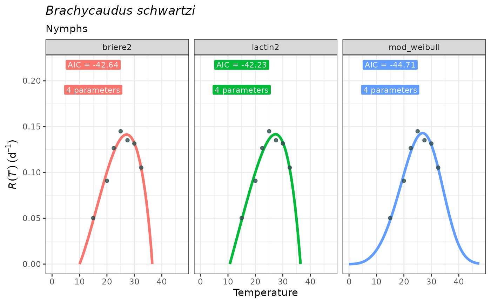

Plot the predicted development rates across temperatures based on fitted Thermal Performance Curves (TPCs) for one or several models displayed in facets.
Usage
plot_devmodels(
temp = NULL,
dev_rate = NULL,
fitted_parameters = NULL,
species = NULL,
life_stage = NULL
)Arguments
- temp
a vector of temperatures used in the experiment. It should have at least four different temperatures and must contain only numbers without any missing values.
- dev_rate
a vector of estimated development rates corresponding to each temperature. These rates are calculated as the inverse of the number of days to complete the transition from the beginning of a certain life stage to the beginning of the following at each temperature. It must be numeric and of the same length as
temp.- fitted_parameters
a
tibbleobtained withfit_devmodels(), including parameter names, estimates, standard errors, AICs, and nls objects (fitted_models) using thenls.multstart::nls_multstart()approach.- species
optional a string of the target species that will constitute the plot title. Must be of type "character".
- life_stage
optional a string of the target life stage that will constitute the plot subtitle. Must be of type "character".
Value
A plot with predicted values (development rate) across temperatures
for models that have adequately converged using fit_devmodels() function.
It's a ggplot object, which can be assigned to a user-defined object.
References
Angilletta, M.J., (2006). Estimating and comparing thermal performance curves. J. Therm. Biol. 31: 541-545. (for model selection in TPC framework)
Padfield, D., O'Sullivan, H. and Pawar, S. (2021). rTPC and nls.multstart:
A new pipeline to fit thermal performance curves in R. Methods Ecol Evol. 12: 1138-1143.
Rebaudo, F., Struelens, Q. and Dangles, O. (2018). Modelling temperature-dependent
development rate and phenology in arthropods: The devRate package for R.
Methods Ecol Evol. 9: 1144-1150.
Satar, S. and Yokomi, R. (2002). Effect of temperature and host on development of Brachycaudus schwartzi (Homoptera: Aphididae). Ann. Entomol. Soc. Am. 95: 597-602.
See also
fit_devmodels() for fitting Thermal Performance Curves to
development rate data, which is in turn based on nls.multstart::nls_multstart().
Examples
data("aphid")
fitted_tpcs <- fit_devmodels(temp = aphid$temperature,
dev_rate = aphid$rate_value,
model_name = c("lactin2", "briere2", "mod_weibull"))
#> fitting model lactin2
#> fitting model briere2
#> fitting model mod_weibull
plot_devmodels(temp = aphid$temperature,
dev_rate = aphid$rate_value,
fitted_parameters = fitted_tpcs,
species = "Brachycaudus schwartzi",
life_stage = "Nymphs")
